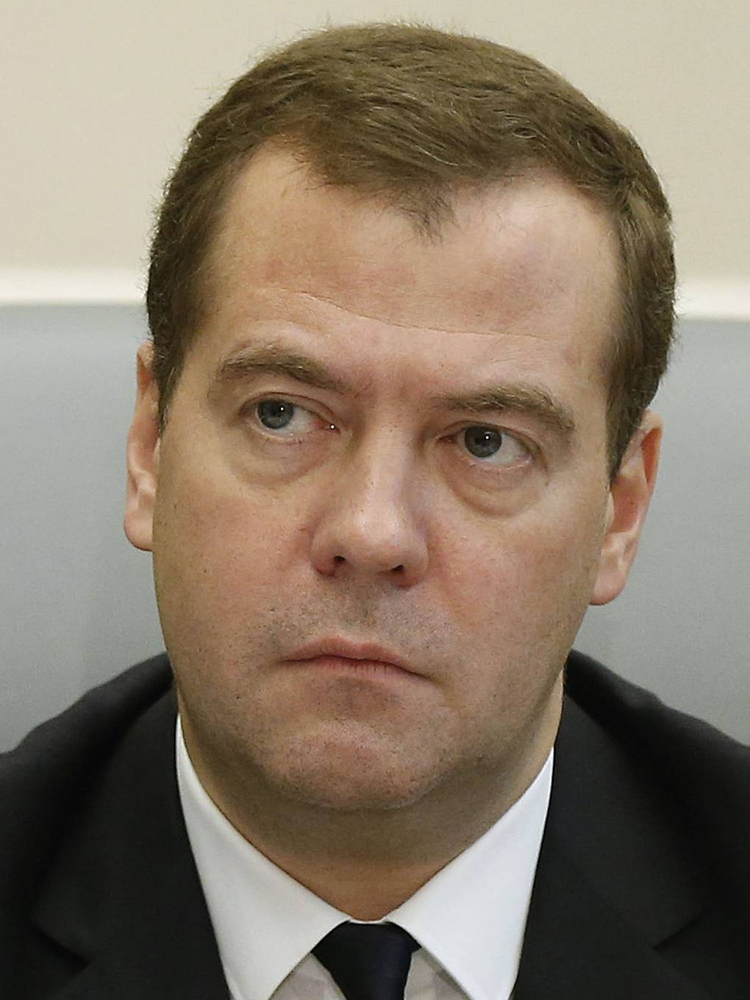

Ex-President. Putin's Deputy. Voice of nuclear blackmail.

Former "liberal", now Russia's chief nuclear threatener.
Born to a family of academics. His father taught at the Leningrad Technological Institute. He studied law at Leningrad State University — where he first crossed paths with Anatoly Sobchak.
On Sobchak's team, he works alongside Putin. When Putin moves to federal structures, Medvedev follows. He becomes part of the tight circle of St. Petersburg lawyers who rise together with the future president.
Western media hail him as a "liberal" and "modernizer." He talks about innovation, Skolkovo, a "reset" with the US. An iPhone instead of a KGB image. Time magazine puts him on the cover. Throughout these years, Putin is Prime Minister and the real center of power.
Returns as Prime Minister after the power swap. In 2017 Navalny publishes "He's Not Dimon" — exposing Medvedev's real-estate empire, yachts, and vineyards. 20 million views. Protests across Russia. Medvedev responds: "I'm working."
After February 24, a new Medvedev emerges on Telegram. Threats to use nuclear weapons, promises to "destroy" Ukraine, insults directed at Western leaders. Some call it sincere; others call it "bad cop" theater beside Putin. The effect is the same.
Medvedev's Telegram channel becomes one of the most-cited sources of Russian escalation rhetoric in global media. Sanctioned by all major Western states. Accounts frozen. Travel banned.
Medvedev is a textbook example of a politician who switched masks. The Kremlin needed him as a "moderate face" for the West: iPhone, Twitter, meetings with Obama. When that role was no longer required, he became the voice of maximum escalation. His Telegram channel functions as a tool of deliberate intimidation — each new post about nuclear weapons makes global headlines and creates psychological pressure without actual action. Interp.
Personal sanctions imposed by the EU, USA, UK, Canada, Australia, and Japan. Foreign assets frozen. Entry banned to EU and G7 countries. On OFAC (USA) and equivalent EU registers since 2022.
All claims in this dossier are based on open public sources. Facts marked Fact have direct primary sources. Marked Interp. are editorial assessments of documented events.